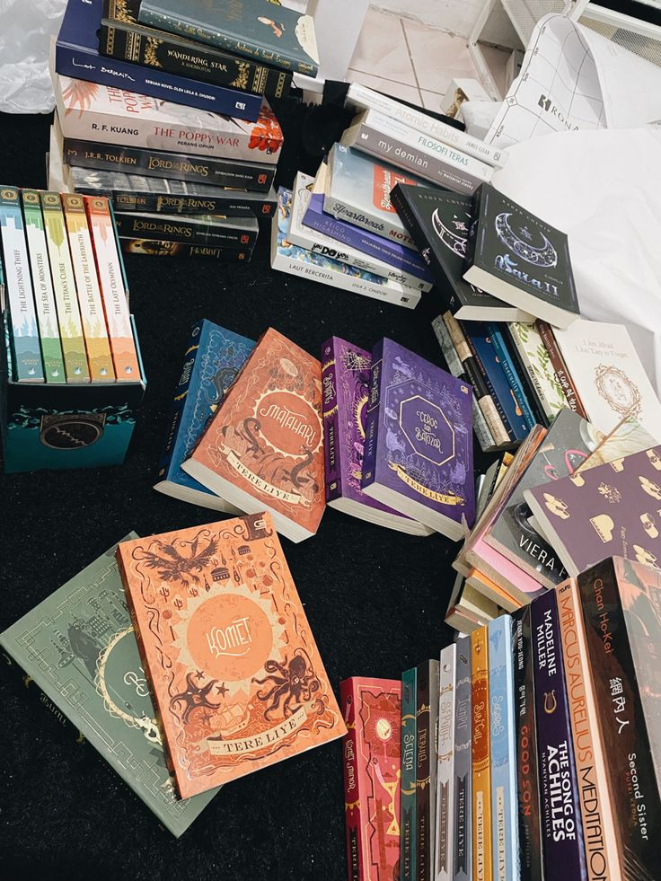

Daftar Buku

Berikut adalah daftar buku yang saya miliki beserta status bacanya.
| Judul | Penulis | Tahun Terbit | Status Baca |
|---|---|---|---|
| Laskar Pelangi | Andrea Hirata | 2005 | Sudah Dibaca |
| Bumi | Tere Liye | 2014 | Sudah Dibaca |
| Filosofi Teras | Henry Manampiring | 2018 | Belum Dibaca |
Tambah Buku
Tentang Saya
Halaman ini berisi koleksi buku yang saya miliki dan status baca dari setiap buku.